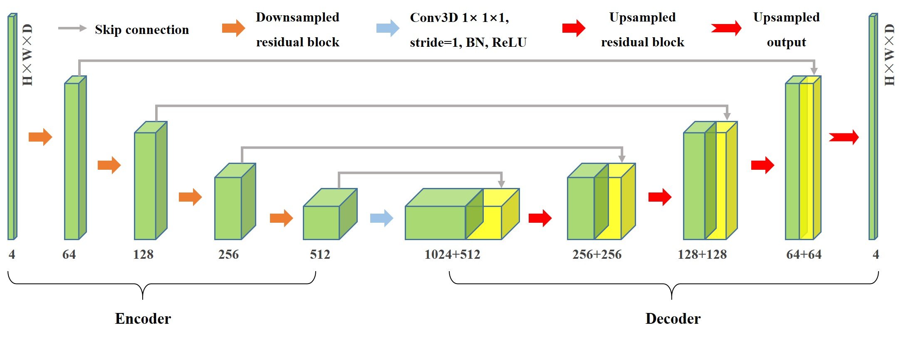
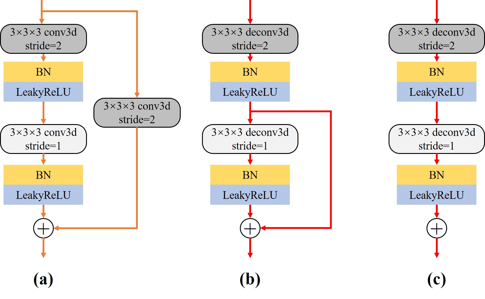

ResUnet3D-三维非定常流场预测


概述
一般工程实际问题都是三维复杂流动，其中流场的快速获取与准确分析十分具有挑战性。CFD技术对于涉及复杂几何的三维流场分析时，由于网格自由度的增加会耗费大量计算资源,限制其完成交互式设计和实时优化控制等任务。日益缩短的设计周期也为流场的快速高保真模拟提出了新的要求。
近年来，深度学习技术在流场建模中的潜力得到深入挖掘，但大部分建模工作依然围绕二维形状展开，距离实际的工程应用场景还具有一定的差距。这主要是因为与2D数据相比，三维数据中的空间耦合效应更强，需要建立更加复杂的神经网络架构提取流动的非线性特征。同时，大量数据集的处理和具有大量模型参数的神经网络的训练需要鲁棒的计算能力和存储资源，这可能受到硬件限制的限制。
为了实现三维非定常流动的非线性特征提取，提出了一种基于残差连接的全卷积神经网络（ResUnet3D）模型建立三维流场快照之间的非线性映射。
问题描述
高精度三维流场的获取对于工业界存在难度，本模型不使用大量历史流场快照作为支撑，而是直接从当前单个时刻的流场快照\(F^t\)中提取流场潜在特征，进一步提出特征解码的两种策略：
将其解码为一定倍数scale的增量流场\(\Delta {F}^t\)，再通过迭代策略实现三维非定场的长期预测：
直接将其解码为未来时刻的的流场，数据往往需要进行归一化处理，然后通过迭代实现长期预测:
技术路径
针对上述问题，主要的技术路径主要包含以下几个步骤：
数据加载；
构建模型；
定义优化器与损失函数；
模型训练；
模型推理；
结果可视化。
模型架构
ResUnet3D的基本框架主要基于3D Unet和残差网络ResNet，遵循编码器和解码器的范式，结构整体呈对称的U型。主要特点在于传统的卷积被替换成了卷积残差块：

编码器：左侧的压缩通道(Contracting Path)，将高维的流场数据进行下采样，分层次提取目标低维特征。编码器中包含四个下采样残差块，结构如图（a）所示。在编码器使用步长为2的卷积代替池化操作进行下采样。经过一个残差块运算后，特征通道扩大为原来的两倍，尺寸减半。
解码器：相应的右侧解码器为拓展通道(Expansive Path)，负责将低维特征进行拓展，对应的具有四个上采样残差块；上采样残差块的结构如图（b）所示，首先执行反卷积进行增大特征为原来的两倍，将特征通道数降低。特别注意的是，上采样残差块舍弃恒等连接就是上采样输出块的结构图（c），负责模型的最终的输出。
残差连接：除了残差块中的残差连接，还在模型中添加了如实心灰色箭头所示的跳跃连接。残差连接的增多有助于提取高维流场的低频特征，进一步丰富流场预测的细节。

数据集介绍
数据集为三维圆球绕流的多维流动快照数组：
三维圆球粘性绕流是流体力学特别是工程应用中的基础性问题，选择雷诺数Re=300工况进行研究，此时圆球尾部会周期性地脱落发夹状的规则尾涡，非定常特性明显；
数据集计算状态与建立方法的详细信息见论文； 最终的流动数据集是基于文中笛卡尔采样方法得到的6D×3D×3D空间域内的\(F\in {{\mathbb{R}}^{T\times C\times H\times W\times D}}\),其中T为快照数量（400），C为通道数（4，分别代表压强、流向速度、法向速度和展向速度信息），H×W×D=128×64×64分别为快照的高、宽和深）
下载地址；
[1]:
import os
import time
import argparse
import numpy as np
import mindspore
from mindspore import nn, context, ops, jit, set_seed
from mindspore import Tensor
from mindspore.amp import DynamicLossScaler, auto_mixed_precision, all_finite
from mindflow.utils import load_yaml_config
from mindflow.common import get_warmup_cosine_annealing_lr
from src import ResUnet3D, create_dataset, UnsteadyFlow3D, check_file_path, calculate_metric
[2]:
set_seed(123456)
np.random.seed(123456)
训练环境
训练采用Mindspore框架的静态图模式（GRAPH）
在GPU（默认）或Ascend进行训练（单卡）
[3]:
def parse_args():
"""Parse input args"""
parser = argparse.ArgumentParser(description='model train for 3d unsteady flow')
parser.add_argument("--mode", type=str, default="GRAPH", choices=["GRAPH", "PYNATIVE"],
help="Context mode, support 'GRAPH', 'PYNATIVE'")
parser.add_argument("--save_graphs", type=bool, default=False, choices=[True, False],
help="Whether to save intermediate compilation graphs")
parser.add_argument("--save_graphs_path", type=str, default="./graphs")
parser.add_argument("--device_target", type=str, default="GPU", choices=["GPU", "Ascend"],
help="The target device to run, support 'Ascend', 'GPU'")
parser.add_argument("--device_id", type=int, default=0, help="ID of the target device")
parser.add_argument("--config_file_path", type=str, default="./config.yaml")
parser.add_argument("--norm", type=bool, default=False, choices=[True, False],
help="Whether to perform data normalization on original data")
parser.add_argument("--residual_mode", type=bool, default=True, choices=[True, False],
help="Whether to use indirect prediction mode")
parser.add_argument("--scale", type=float, default=1000.0,
help="Whether to use indirect prediction mode")
input_args = parser.parse_args()
return input_args
args = parse_args()
context.set_context(mode=context.GRAPH_MODE if args.mode.upper().startswith("GRAPH") else context.PYNATIVE_MODE,
save_graphs=args.save_graphs,
save_graphs_path=args.save_graphs_path,
device_target=args.device_target,
device_id=args.device_id)
use_ascend = context.get_context(attr_key='device_target') == "Ascend"
超参数配置
从配置文件中读取数据集配置参数（data）、模型参数（model）、优化器相关参数（optimizer）和输出相关参数（summary）等。
[4]:
config = load_yaml_config(args.config_file_path)
data_params = config["data"]
model_params = config["model"]
optimizer_params = config["optimizer"]
summary_params = config["summary"]
数据集加载
下载后的数据为原始数据（original_data.npy）
第一次运行会根据正则化、划分比例等配置生成处理后的训练（train_data.npy or train_data.npy）、验证（eval_data.npy or eval_data.npy）和推理（infer_data.npy or infer_data_norm.npy）数据集。
训练数据集的尺寸为（T, C, D, H, W) -> （300,4,64,128,64）,然后会被转换为MindSpore专门的DatasetGenerator。
[5]:
# data for training
train_loader = create_dataset(data_params, is_train=True, norm=args.norm, residual=args.residual_mode, scale=args.scale)
train_dataset = train_loader.batch(model_params['batch_size'], drop_remainder=True)
# data for evaluating
eval_loader = create_dataset(data_params, is_eval=True, norm=args.norm, residual=args.residual_mode, scale=args.scale)
eval_dataset = eval_loader.batch(1, drop_remainder=False)
模型构建
通过配置输入通道数（in.dims）、输出通道数（out.dims）、第一层中间通道数（base）和初始化等信息来构建适合的ResUnet3D模型。
[6]:
model = ResUnet3D(in_channels=model_params['in_dims'], base=model_params['base'], out_channels=model_params['out_dims'])
损失函数与优化器
为了抑制推理过程中的误差积累，我们在原有的强度损失函数的基础上加入了具有弱物理可解释性的梯度损失项，在这里仅计算了一阶导数。
[7]:
if use_ascend:
loss_scaler = DynamicLossScaler(1024, 2, 100)
auto_mixed_precision(model, 'O1')
else:
loss_scaler = None
# prepare optimizer and loss function
steps_per_epoch = train_dataset.get_dataset_size()
lr = get_warmup_cosine_annealing_lr(lr_init=optimizer_params['initial_lr'],
last_epoch=optimizer_params['train_epochs'],
steps_per_epoch=steps_per_epoch,
warmup_epochs=optimizer_params['warmup_epochs'])
optimizer = nn.Adam(params=model.trainable_params(), learning_rate=Tensor(lr))
problem = UnsteadyFlow3D(model, loss_fn=model_params['loss_fn'], metric_fn=model_params['metric_fn'],
loss_weight=model_params['loss_weight'], dynamic_flag=model_params['dynamic_flag'],
t_in=data_params['t_in'], t_out=data_params['t_out'],
residual=args.residual_mode, scale=args.scale)
训练函数与数据下沉
使用MindSpore>= 2.0.0的版本，可以使用函数式编程范式训练神经网络，单步训练函数使用jit装饰。数据下沉函数data_sink，传入单步训练函数和训练数据集。
[8]:
def forward_fn(train_inputs, train_label):
loss = problem.get_loss(train_inputs, train_label)
if use_ascend:
loss = loss_scaler.scale(loss)
return loss
grad_fn = ops.value_and_grad(forward_fn, None, optimizer.parameters, has_aux=False)
@jit
def train_step(train_inputs, train_label):
loss, grads = grad_fn(train_inputs, train_label)
if use_ascend:
loss = loss_scaler.unscale(loss)
is_finite = all_finite(grads)
if is_finite:
grads = loss_scaler.unscale(grads)
loss = ops.depend(loss, optimizer(grads))
loss_scaler.adjust(is_finite)
else:
loss = ops.depend(loss, optimizer(grads))
return loss
[9]:
sink_process = mindspore.data_sink(train_step, train_dataset, sink_size=1)
summary_dir = os.path.join(summary_params['summary_dir'], f"norm-{args.norm}",
f"resi-{args.residual_mode} scale-{args.scale} {model_params['loss_fn']}")
ckpt_dir = os.path.join(summary_dir, "ckpt")
check_file_path(ckpt_dir)
模型训练
[10]:
print("pid:", os.getpid())
print(f"Running in {args.mode.upper()} mode within {args.device_target} device, using device id: {args.device_id}.")
start_time = time.time()
for cur_epoch in range(1, optimizer_params['train_epochs'] + 1):
local_time_beg = time.time()
model.set_train(True)
for _ in range(steps_per_epoch):
cur_loss = sink_process()
epoch_time = time.time() - local_time_beg
print(f"epoch: {cur_epoch:-4d} loss: {cur_loss.asnumpy():.8f} epoch time: {epoch_time:.2f}s", flush=True)
if cur_epoch % summary_params['eval_interval'] == 0:
model.set_train(False)
# A uniform metric than total loss is unified as the evaluation standard
calculate_metric(problem, eval_dataset)
mindspore.save_checkpoint(model, os.path.join(ckpt_dir, f'ckpt-{cur_epoch}'))
print(f"Start-to-End total training time: {(time.time() - start_time):.2f}s")
pid: 3119283
Running in GRAPH mode with GPU device, using device id: 0.
epoch: 1 loss: 4.42134047 epoch time: 92.19s
epoch: 2 loss: 3.66357303 epoch time: 80.85s
epoch: 3 loss: 3.45540810 epoch time: 80.95s
epoch: 4 loss: 3.41599965 epoch time: 80.95s
epoch: 5 loss: 3.40474916 epoch time: 80.81s
epoch: 6 loss: 3.39673209 epoch time: 83.84s
epoch: 7 loss: 3.39179802 epoch time: 83.76s
epoch: 8 loss: 3.37320089 epoch time: 84.44s
epoch: 9 loss: 3.33641028 epoch time: 84.50s
epoch: 10 loss: 3.15259790 epoch time: 83.91s
================================Start Evaluation================================
mean metric: 1.27255411 eval total time:6.78
=================================End Evaluation=================================
epoch: 11 loss: 2.73457718 epoch time: 83.85s
epoch: 12 loss: 2.38593721 epoch time: 84.11s
epoch: 13 loss: 2.08863926 epoch time: 81.57s
epoch: 14 loss: 1.94633877 epoch time: 81.80s
epoch: 15 loss: 1.90115929 epoch time: 81.57s
epoch: 16 loss: 1.83967257 epoch time: 81.52s
epoch: 17 loss: 1.87956619 epoch time: 81.10s
epoch: 18 loss: 1.79619837 epoch time: 80.80s
epoch: 19 loss: 1.85087931 epoch time: 80.74s
epoch: 20 loss: 1.78368652 epoch time: 82.40s
================================Start Evaluation================================
mean metric: 0.30063288 eval total time:5.70
=================================End Evaluation=================================
Start-to-End total training time: 1670.48s
模型推理
模型训练结束后，运行eval.py，通过控制台控制需要读取的模型路径，在给定任意时刻的初始流场的条件下，快速、准确的推理未来长时间的三维流场。
结果可视化
训练好的间接预测模型进行推理的压力云图的随时间的变化如下所示,与CFD结果一致，模型捕捉到了周期性流动的特征：
预测两个周期后根据速度场数值着色的三维涡量等值面(\(Q=0.0005\))云图如下所示，发夹状基本一致，但ResUnet3D预测尾部涡面比较粗糙：